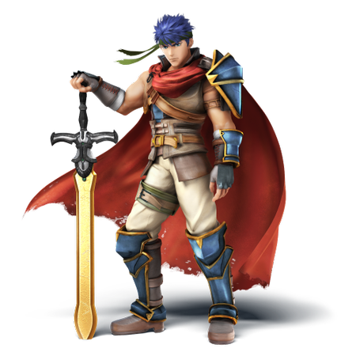
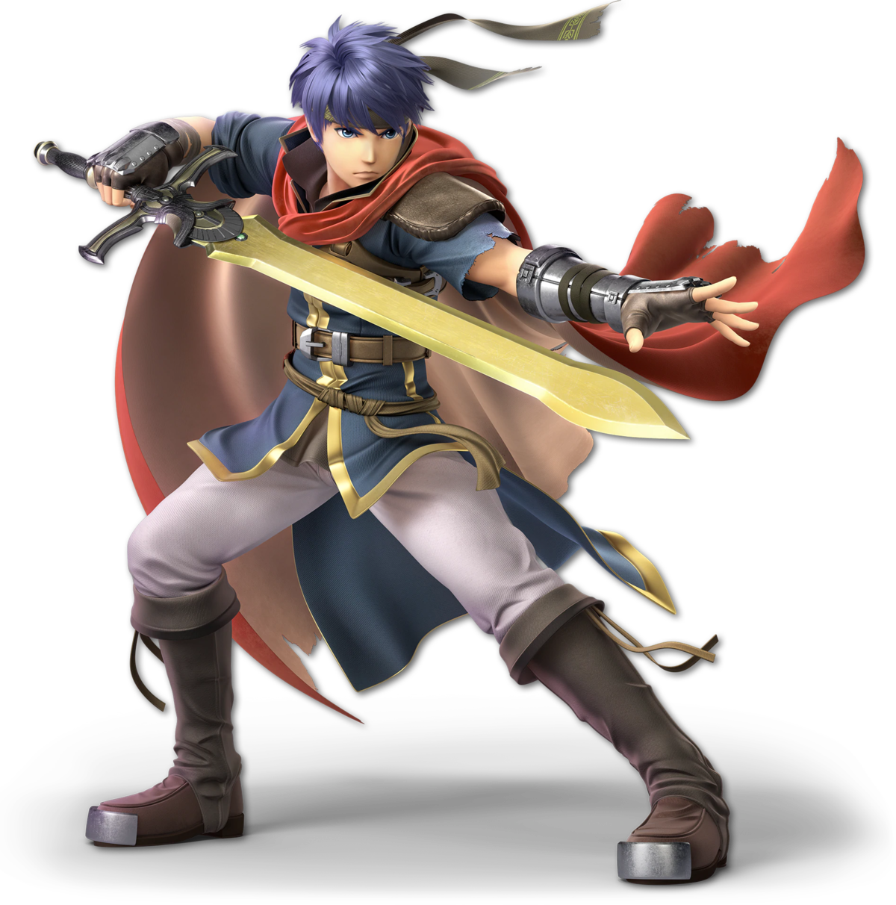
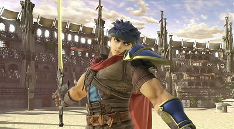

小学生のころ、私はSwitchにとってもあこがれていました。しかし、中学受験勢だったため、すぐに買ってもらうことは叶わず…
受験が終わって、合格祝いとしてようやくSwitchをゲットしました。
このとき、Switchと一緒に買ったソフトがスマブラSPです。
歴代キャラが全員参戦！ということで当時はめちゃくちゃ盛り上がりました。
わたしはアイク、リドリー、勇者あたりをよく使用していました。
余談ですが、このアイクというキャラ、3DSの時はマッチョのおじさんだったんでした。

画像引用元:大乱闘スマッシュブラザーズ for WiiU wiki http://ssbwiki.alloyape.com/305
それが、SPになると爽やかイケメンになっていたのでビックリしました。

画像引用元:大乱闘スマッシュブラザーズwiki https://smashwiki.info/%E3%82%A2%E3%82%A4%E3%82%AF
ちなみに、おじさんのアイクもちゃんと実装されてます。
